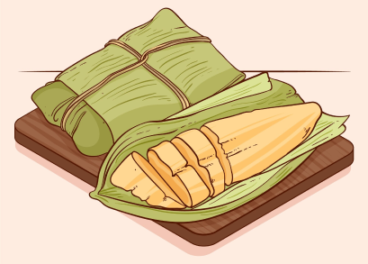

Pamonha
Prato típico com milho verde ralado
Porções
1
Ingredientes
-
1espiga de milho verde
-
1colher de sopa de açúcar
-
1colher de sopa de manteiga
-
sal a gosto
-
palha de milho (para embrulhar)
Modo de Preparo
- 1. Descasque a espiga de milho e corte os grãos.
- 2. Bata o milho, açúcar, manteiga e sal no liquidificador.
- 3. Coloque a massa nas palhas de milho e feche bem.
- 4. Cozinhe em água fervente por cerca de 40 minutos.
- 5. Deixe esfriar e sirva.